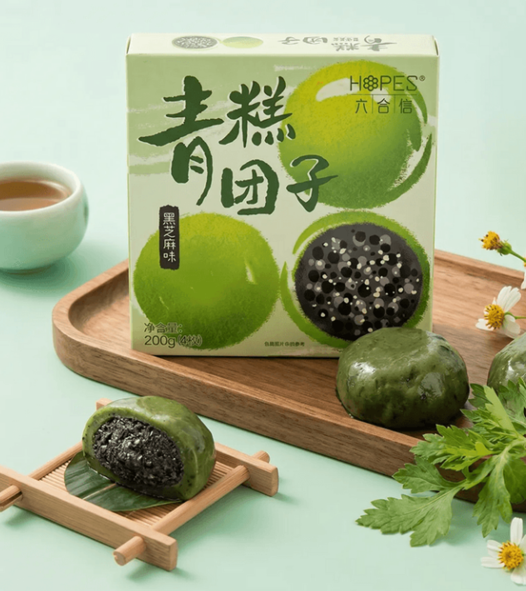

수천 년의 시간 동안 중국인들의 역사, 삶, 그리고 깊은 지혜와 가치가
고스란히 응축된 가장 아름답고 성대한 네 개의 고유 명절을 만나봅니다.
날짜 및 의미 음력 1월 1일로, 한해를 마무리하고 새해를 맞이하는 중국에서 가장 성대하게 치러지는 대축제이자 전통 설날입니다.
대표 풍습 문 앞에 붉은 대련을 붙이고 '복(福)' 자를 거꾸로 붙여 복이 내려오길 기원하며, 액운을 쫓기 위한 폭죽놀이를 합니다.
대표 음식 북방 지역에서는 가족의 화목을 뜻하는 얇은 피 만두 '자오쯔(饺子)'를, 남방 지역에서는 성장과 발전을 기원하는 찹쌀떡 '녠가오(年糕)'를 먹습니다.
날짜 및 의미 양력 4월 4일~6일경으로, 하늘이 맑고 따뜻한 기운이 만물에 깃드는 봄의 절기이자 조상의 은혜를 되새기는 명절입니다.
대표 풍습 조상의 묘를 찾아 정성껏 벌초와 성묘를 하는 소묘(扫墓)를 올리며, 따스한 봄볕 아래 교외로 봄나들이(踏青)를 가기도 합니다.
대표 음식 생명력이 넘치는 쑥 즙을 짜서 찹쌀과 반죽하여 달콤한 팥소나 고기소를 넣어 쪄낸 동그란 녹색 떡 '청단(青团, 칭탄)'을 주로 만들어 먹습니다.

날짜 및 의미 음력 5월 5일로, 옛 초나라의 애국 시인 '굴원(屈原)'이 멱라수에 투신하자 그를 애도하고 구하기 위해 모여들던 전통에서 유래했습니다.
대표 풍습 굴원의 영혼을 위로하기 위해 화려한 용 모양 배를 만들어 강가에서 경주를 치르는 격동적인 용선 경주(龙舟)를 벌입니다.
대표 음식 찹쌀을 대나무나 갈대 잎으로 감싸서 쪄낸 '쫑즈(粽子)'를 만들어 먹습니다. 이는 물고기들이 굴원의 시신을 해치지 못하도록 먹이로 던져준 것에서 비롯되었습니다.
날짜 및 의미 음력 8월 15일로, 한국의 추석에 해당하는 가을 최대 명절입니다. 둥글게 꽉 찬 보름달을 바라보며 가족 구성원의 완벽한 화합(团圆)을 소망합니다.
대표 풍습 가족들이 정원에 모여 달맞이를 하고 달에 제사를 지내며(赏月), 밝게 빛나는 풍등(孔明灯)을 하늘 높이 쏘아 올려 복을 구합니다.
대표 음식 화합과 완전함을 뜻하는 둥근 보름달 모양을 본떠 만든 전통 과자 '월병(月饼)'을 다정하게 나누어 먹는 전통이 있습니다.
| 명절명 (한어병음) | 한자 표기 | 지정 시기 (음력/양력) | 대표 핵심 음식 | 지향하는 핵심 가치 |
|---|---|---|---|---|
| 춘절 (Chūnjié) | 春节 | 음력 1월 1일 | 자오쯔 (饺子), 녠가오 (年糕) | 새해 복 기원, 액운 퇴치, 가업 번창 |
| 청명절 (Qīngmíngjié) | 清明节 | 양력 4월 4일~6일경 | 청단 (青团) | 조상 숭배, 성묘, 봄철 자연의 생기 환영 |
| 단오절 (Duānwǔjié) | 端午节 | 음력 5월 5일 | 쫑즈 (粽子) | 시인 굴원 기리기, 질병 예방 및 신체 건강 |
| 중추절 (Zhōngqiūjié) | 中秋节 | 음력 8월 15일 | 월병 (月饼) | 가족의 화목과 결합 (단원, 团圆) |